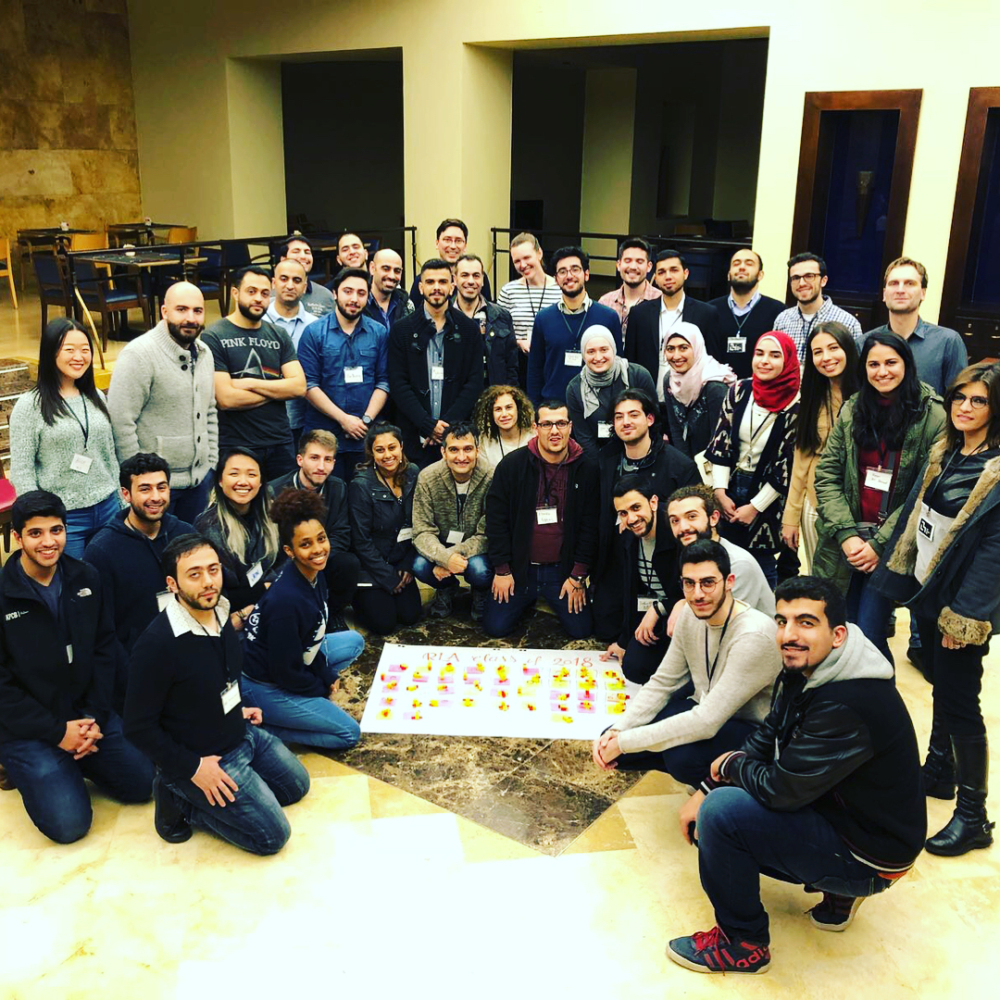

Photos


We support engineers and computer scientists from the Middle East to
create educational technologies for refugee learners
The first round of the Refugee Learning Accelerator began in October 2017. It had three phases: Course, Workshop, Testing. We are currently in the Testing Phase.
Participants applied in teams of two - five computer scientists, engineers, and designers all of whom have an interest in applying their technical skills to the real world problems facing refugee learners. We looked for teams with a good mix of technical and design experience, commitment to some of the countries most affected by the Syrian refugee crisis, and a strong interest in the potential of digital tools to change the way that education is provided. They didn't necessarily need to have a concrete idea at this point: we launched the Accelerator with an online course to help them understand the problem and make connections.The course was structured around three design challenges focused on Human Centered Design, language learning and augmented reality, and the use of messaging apps in educational contexts. The course was hosted on GitLab, Mattermost and Unhangout. You can view our course materials here.
Fourteen teams which had shown the greatest progress and had the promise to take their ideas further, were invited to a workshop in Amman, Jordan. Over the course of eight days, teams visited NGOs, discussed their ideas with experts, participated in seminars, built preliminary prototypes, and pitched their project to a panel of guests and their peers. The focus was on identifying a specific problem and finding an appropriate solution. We emphasized collaboration and community over competition. You can see the projects our teams developed as well as other materials here. You can view our workshop materials on business model canvas, user testing and pitching here.
Following the workshop, teams had the opportunity to apply for a small grant to continue the development and field testing. We selected six teams to continue development, including taking their prototypes into the field and test them with users.
Click each tile to see more about the team's work at the workshop in Amman.
Empower university students by improving their learning experience via AR
Connect students to teachers in their community via mobile
Learn English via scenarios and spoken practice in an app
Supporting teachers and students via classroom peer-to-peer learning
Because your location shouldn't determine your education
Mobile app connecting refugee learners to the world through bedtime stories
Curriculum and training for NGOs working with kids with social and emotional challenges
Help refugees learn English by enriching the reading experience via mobile app
Chat bot connecting kids with learning disabilities to the right NGO
Help university students learn English and software, at the same time
Create a pathway from vocational training to jobs through partnerships with employers
Connect refugee students with volunteers online to provide educational support
Integrating Syrian kids into Iraqi Kurdistan through a VR game to learn Kurdish
Improving refugee community health through a gamified learning UI
Interactive math curricula to bridge the gap between the Jordanian and Syrian curricula
Help young people learn about startups through a startup training platform